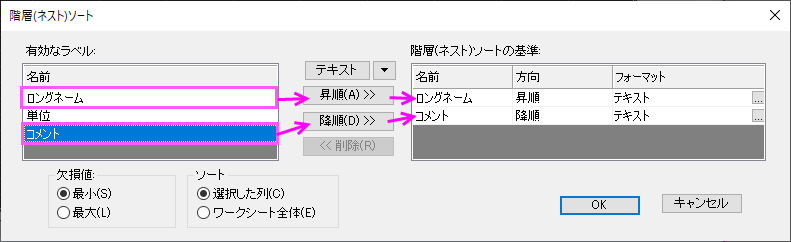

ラベルによるワークシート列のアンスタックとソート
Unstack-Sort-Columns-by-Label
概要
データセット（特に特定の分析や作図操作を想定して作成されていないデータセット）を使用するとき、必要な処理を行う前に、データの調整（並び替え、削減など）が必要なことはよくあります。データセットが大きく、データの「切り取り＆ペースト」で並べ替えることが現実的でない場合、特に難しい可能性があります。行と列の配置が単純なCSVファイルでさえ、分析や作図の前に調整が必要になることがよくあります。
このチュートリアルでは、大きなデータセットである国連食糧農業機関（FAO）の1961年から2019年までの世界気温のデータに接続し、いくつかの操作を実行してデータを並び替え、2つのカテゴリデータ列にデータフィルタを適用してから、結果をインタラクティブなエラーバーを含む行データ線系グラフとしてプロットします。
必要なOriginのバージョン: Origin 2021 以降
学習する項目
- Web上のデータソースに接続する方法
- 1つの列にあるカテゴリに基づいてワークシートを「アンスタック」する方法
- スタックされていない列を列ラベルで並べ替える方法
- 複数の列にフィルタを設定して、大規模なデータセットを管理し、データの傾向を表示する方法
- フィルタデータで行データプロットを作図する方法
- 列メタデータの置換を使用してグラフにラベルを付けるダイナミックグラフタイトルを作成する方法
ステップ
- ワークブックがアクティブな状態で、データ: Webに接続を選択します。Webに接続ダイアログで、以下をURLボックスにコピーし、OKをクリックします。
- http://shared.originlab.com/techdownload/FAO_Temperature_Change.csv
- CSVインポートオプションの設定をそのままでOKをクリックし、WebデータをOriginのワークシートに接続します。
- データ列がよく見えるように、また、いくつかの点を確認できるように、ワークブックのサイズを変更します。
- Areaというラベルの付いた2番目の列は、地理的地域と経済グループの繰り返しリストです。
- Monthsというラベルの付いた4番目の列は、期間（月、四半期、年）の繰り返しリストです。
- Elementというラベルの付いた6番目の列には、気温変化と標準偏差のカテゴリが含まれています。
- Y1961からY2019のラベルが付いた列には、1961年から2019年までの気温変化と標準偏差の測定値が含まれています。
- このデータを操作および作図する方法は複数ありますが、データの水平方向の配置に加えて、エラー測定値（標準偏差）を含めると、エラーバーを含む行データプロットが考えられます。しかし、作図できるデータ形式にするには、調整が必要です。
- まず、気温変化と標準偏差のデータを年ごとに別々の列に分割する必要があります（つまり、標準偏差と標準偏差の測定を年ごとにグループ化する必要があります）。このため、列アンスタッキングツールを使用します。データ整形：列アンスタッキングをクリックして、ダイアログボックスを開きます。
- 気温データはY1961 - Y2019列にあるため、アンスタックされるデータの右側にあるフライアウト（矢印）ボタンをクリックして、列を選択を選択します。列ブラウザダイアログで、ロングネームにY1961が表示されるまでスクロールし、キーボードでCtrl + Shiftキーを押しながらEndキーを押します。これにより、すべての気温のデータ列が選択されます。ブロックとして追加ボタンをクリックし、OKをクリックしてブラウザを閉じます。
- グループ列フライアウトボタンをクリックして、F(Y): Elementを選択します。
- オプションで、(a)他の列を含めるのチェックを入れて、(b)テキストボックスの右側にある「ワークシートから選択」ボタン
 をクリックします。ダイアログが縮小したら、Ctrlキーを押しながら、列ヘッダをクリックしてワークシートの列B(Y)とD(Y)を選択します。ボタンをクリックしてダイアログを元に戻し、残りのダイアログ項目をデフォルトのままで、OKをクリックして閉じて出力を生成します。
をクリックします。ダイアログが縮小したら、Ctrlキーを押しながら、列ヘッダをクリックしてワークシートの列B(Y)とD(Y)を選択します。ボタンをクリックしてダイアログを元に戻し、残りのダイアログ項目をデフォルトのままで、OKをクリックして閉じて出力を生成します。
- 追加されたUnstackCols1タブをクリックすると、気温変化と標準偏差の測定値が明確に分割されていることが確認できます。しかし、作図のためには、毎年の気温変化の後に標準偏差が続くように、年ごとに列を並べ替える必要があります。再計算機能の「操作ロック」のため、このシートの列を再整列することはできません。そのため、シートのコピーを作成し、コピーしたシートから操作ロックを削除します（元の出力はそのままにします）。
- UnstackCols1シートタブを右クリックし、複製を選択します。追加されたUnstackCols2シートで、左上隅にある緑色の錠前アイコンをクリックし、再計算モード：しないを選択します。確認のメッセージでOKをクリックします。
-
- 出力シートから操作の保護が削除されたので、ラベル行を使って列を自由に並べ替えることができます。UnstackCols2タブをクリックし、シートをブックの外にドラッグして別のブックを作成します。列C(Y)のヘッダ(Y1961)をクリックして選択し、Ctrl + Shift + Endを押して残りのすべての列を選択します。ワークシート：ラベルで列をソートをクリックして、下図のように設定します。
- 
- OKをクリックして列を再配列し、年毎の気温変化の測定値の後に、標準偏差の測定値が続くようにします。次に、まだ選択されているデータを右クリックし、列XY属性の設定：カスタム... を選択し、指定ボックスにYEと入力して、OKをクリックします。これにより、選択した列がY、yEr±の順で設定され、作図に適したワークシートになります。
-
- 細かい内容：ワークシートをスクロールして列C(ロングネーム= Y1961 )が表示されるようにし、単位セルをダブルクリックし、左括弧を入力してから右クリックしてシンボルマップを選択します。シンボルマップを参照して「度」シンボル（F0B0）を見つけ、挿入をクリックした後閉じるをクリックします。大文字の「C」と右括弧を入力します。次に、セルの右下隅に「+」カーソルが表示されるようポインタを置き、ダブルクリックして（°C）をシートの最後まで延長します。

カテゴリ列にデータフィルタを追加する
この時点では、非常に大きなデータセットのため、ワークシートのすべてのデータをプロットしようとすると、作成したい行データプロットが埋もれてしまいます。データの傾向をよりよく確認して比較するために、Area列とMonths列にデータフィルタを追加します。
- Area列の列ヘッダをクリックして列を選択し、そして列：フィルタ：フィルタを追加または削除を選択します。フィルタのアイコンが列ヘッダに追加されます。列フィルタアイコンをクリックし、すべて選択ボックスをオフにして、すべてのチェックを外します。次に、Africa、Antarctica、Asia、Australia & New Zealand、Europe、Northern America、South Americaの横にあるチェックボックスにチェックをに入れて、OKをクリックします。
- Months列の列ヘッダをクリックして列を選択し、そして列：フィルタ：フィルタを追加または削除を選択します。列フィルタアイコンをクリックし、すべて選択ボックスをオフにして、すべてのチェックを外してから、Meteorological yearの横にあるチェックボックスにチェックを入れ、OKをクリックします。
- Area列を選択してから右クリックしてXとして設定を選択します。Ctrlキーを押しながら列Cを選択し、Shift + Endを押してワークシートの残りの列を選択します。
- 作図> 基本2D：行データプロット...をクリックします。Yラベルボックスの横にあるフライアウトボタンをクリックし、A(X): AreaとXデータに列ラベルを選択して、OKをクリックします。
- グラフが作成されたら（少し時間がかかるかもしれません）、フォーマット：作図の詳細（ページ属性）を選択し、右側の凡例/タイトルタブをクリックして、%(1), %(2)の解釈モードを@LA: ロングネームに設定します。
プロットのラベル付け、外観上の問題の調整
- 間隔が狭すぎて見えなくなっている横軸の軸目盛ラベルをダブルクリックします。目盛ラベル>フォーマットサブタブで、回転（度）を自動と設定し、重複したラベルの自動非表示にチェックを入れます。
- スケールタブをクリックして、開始を0、終了を60、再スケールを固定に設定し、副目盛はカウントを0に設定します。OKをクリックしてダイアログを閉じます。
- グラフウィンドウの上部中央部分で右クリックし、テキストの追加を選択して、テキストオブジェクトに次のテキストを入力します。
- Months: %([Book2]Unstackcols2,@WL,B[F],W)
- ラベルオブジェクト上で右クリックして、プロパティを選択します。プログラミングタブをクリックし、 (%,$)にリンク,置換レベルを1と設定し、OKをクリックします。ワークシート情報のテキストで置換されラベルには、「Months：Meteorological year」と表示されます。これは、Months列に設定されるフィルタ条件です。(詳細は、テキストラベルの置換を参照してください）。
- グラフのアスペクト比を変更し、必要に応じてグラフの比率を変更できるようにするには、フォーマット：作図の詳細（ページ属性）を選択し、その他のオプションタブでビューモードをウィンドウビューに設定します。OKをクリックして作図の詳細ダイアログを閉じます。
- Ctrlキーを押しながらグラフの凡例を水平にドラッグして、凡例を一直線にします。
- 最後に、表示：表示様式：レイヤ枠をクリックしてチェックマークを付けます。これにより、グラフレイヤに枠が表示されます。必要に応じてページタイトルと凡例を再配置します。
 | オブジェクトマネージャでプロットの1つをクリックすると、他のすべてのプロットの色が薄くなり、1つのプロットで傾向をよりよく確認できます。
|